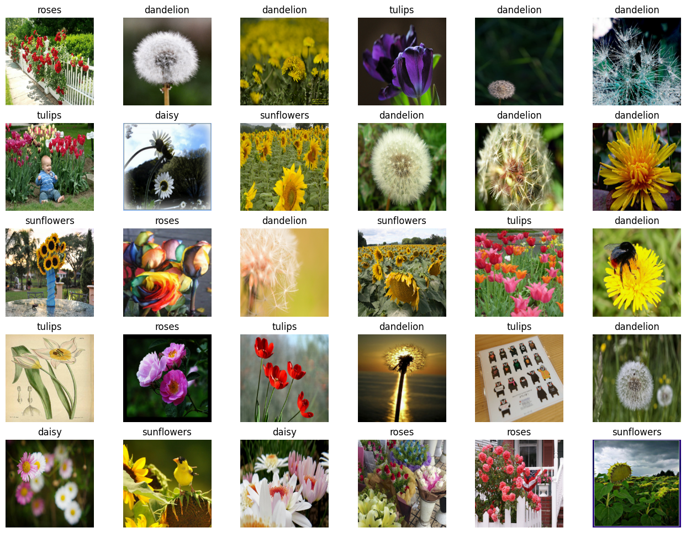
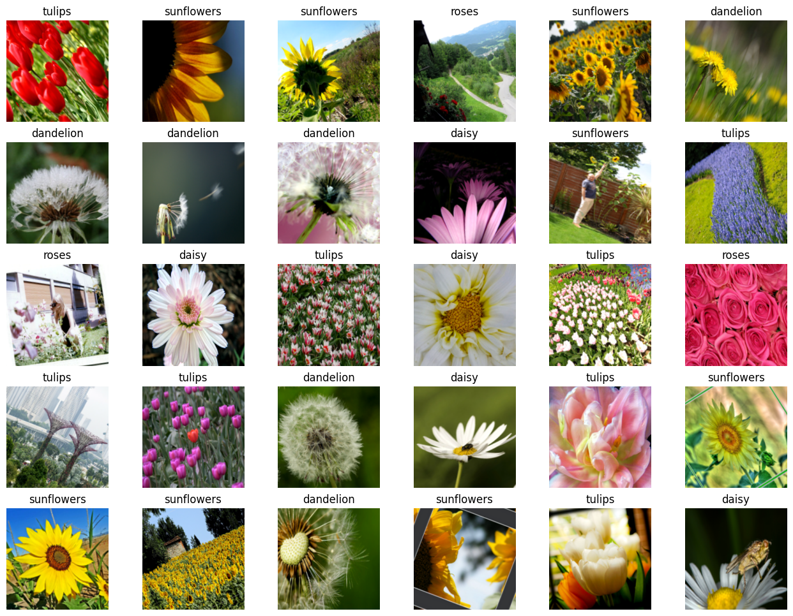
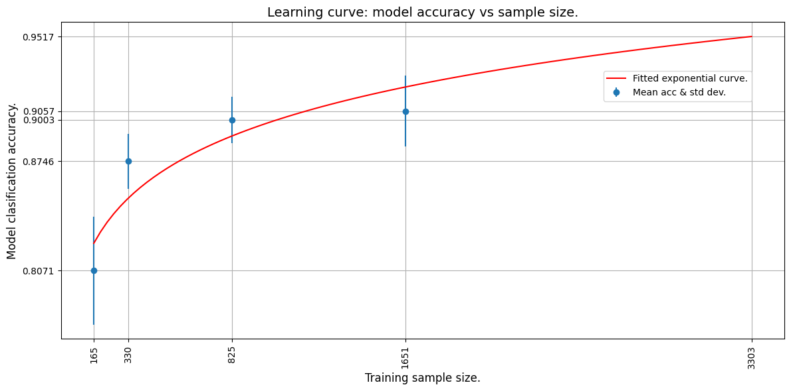

Estimating required sample size for model training
Author: JacoVerster
Date created: 2021/05/20
Last modified: 2021/06/06
Description: Modeling the relationship between training set size and model accuracy.

Introduction
In many real-world scenarios, the amount image data available to train a deep learning model is limited. This is especially true in the medical imaging domain, where dataset creation is costly. One of the first questions that usually comes up when approaching a new problem is: "how many images will we need to train a good enough machine learning model?"
In most cases, a small set of samples is available, and we can use it to model the relationship between training data size and model performance. Such a model can be used to estimate the optimal number of images needed to arrive at a sample size that would achieve the required model performance.
A systematic review of Sample-Size Determination Methodologies by Balki et al. provides examples of several sample-size determination methods. In this example, a balanced subsampling scheme is used to determine the optimal sample size for our model. This is done by selecting a random subsample consisting of Y number of images and training the model using the subsample. The model is then evaluated on an independent test set. This process is repeated N times for each subsample with replacement to allow for the construction of a mean and confidence interval for the observed performance.
Setup
import os
os.environ["KERAS_BACKEND"] = "tensorflow"
import matplotlib.pyplot as plt
import numpy as np
import tensorflow as tf
import keras
from keras import layers
import tensorflow_datasets as tfds
# Define seed and fixed variables
seed = 42
keras.utils.set_random_seed(seed)
AUTO = tf.data.AUTOTUNE
Load TensorFlow dataset and convert to NumPy arrays
We'll be using the TF Flowers dataset.
# Specify dataset parameters
dataset_name = "tf_flowers"
batch_size = 64
image_size = (224, 224)
# Load data from tfds and split 10% off for a test set
(train_data, test_data), ds_info = tfds.load(
dataset_name,
split=["train[:90%]", "train[90%:]"],
shuffle_files=True,
as_supervised=True,
with_info=True,
)
# Extract number of classes and list of class names
num_classes = ds_info.features["label"].num_classes
class_names = ds_info.features["label"].names
print(f"Number of classes: {num_classes}")
print(f"Class names: {class_names}")
# Convert datasets to NumPy arrays
def dataset_to_array(dataset, image_size, num_classes):
images, labels = [], []
for img, lab in dataset.as_numpy_iterator():
images.append(tf.image.resize(img, image_size).numpy())
labels.append(tf.one_hot(lab, num_classes))
return np.array(images), np.array(labels)
img_train, label_train = dataset_to_array(train_data, image_size, num_classes)
img_test, label_test = dataset_to_array(test_data, image_size, num_classes)
num_train_samples = len(img_train)
print(f"Number of training samples: {num_train_samples}")
Number of classes: 5
Class names: ['dandelion', 'daisy', 'tulips', 'sunflowers', 'roses']
Number of training samples: 3303
Plot a few examples from the test set
plt.figure(figsize=(16, 12))
for n in range(30):
ax = plt.subplot(5, 6, n + 1)
plt.imshow(img_test[n].astype("uint8"))
plt.title(np.array(class_names)[label_test[n] == True][0])
plt.axis("off")

Augmentation
Define image augmentation using keras preprocessing layers and apply them to the training set.
# Define image augmentation model
image_augmentation = keras.Sequential(
[
layers.RandomFlip(mode="horizontal"),
layers.RandomRotation(factor=0.1),
layers.RandomZoom(height_factor=(-0.1, -0)),
layers.RandomContrast(factor=0.1),
],
)
# Apply the augmentations to the training images and plot a few examples
img_train = image_augmentation(img_train).numpy()
plt.figure(figsize=(16, 12))
for n in range(30):
ax = plt.subplot(5, 6, n + 1)
plt.imshow(img_train[n].astype("uint8"))
plt.title(np.array(class_names)[label_train[n] == True][0])
plt.axis("off")

Define model building & training functions
We create a few convenience functions to build a transfer-learning model, compile and train it and unfreeze layers for fine-tuning.
def build_model(num_classes, img_size=image_size[0], top_dropout=0.3):
"""Creates a classifier based on pre-trained MobileNetV2.
Arguments:
num_classes: Int, number of classese to use in the softmax layer.
img_size: Int, square size of input images (defaults is 224).
top_dropout: Int, value for dropout layer (defaults is 0.3).
Returns:
Uncompiled Keras model.
"""
# Create input and pre-processing layers for MobileNetV2
inputs = layers.Input(shape=(img_size, img_size, 3))
x = layers.Rescaling(scale=1.0 / 127.5, offset=-1)(inputs)
model = keras.applications.MobileNetV2(
include_top=False, weights="imagenet", input_tensor=x
)
# Freeze the pretrained weights
model.trainable = False
# Rebuild top
x = layers.GlobalAveragePooling2D(name="avg_pool")(model.output)
x = layers.Dropout(top_dropout)(x)
outputs = layers.Dense(num_classes, activation="softmax")(x)
model = keras.Model(inputs, outputs)
print("Trainable weights:", len(model.trainable_weights))
print("Non_trainable weights:", len(model.non_trainable_weights))
return model
def compile_and_train(
model,
training_data,
training_labels,
metrics=[keras.metrics.AUC(name="auc"), "acc"],
optimizer=keras.optimizers.Adam(),
patience=5,
epochs=5,
):
"""Compiles and trains the model.
Arguments:
model: Uncompiled Keras model.
training_data: NumPy Array, training data.
training_labels: NumPy Array, training labels.
metrics: Keras/TF metrics, requires at least 'auc' metric (default is
`[keras.metrics.AUC(name='auc'), 'acc']`).
optimizer: Keras/TF optimizer (defaults is `keras.optimizers.Adam()).
patience: Int, epochsfor EarlyStopping patience (defaults is 5).
epochs: Int, number of epochs to train (default is 5).
Returns:
Training history for trained Keras model.
"""
stopper = keras.callbacks.EarlyStopping(
monitor="val_auc",
mode="max",
min_delta=0,
patience=patience,
verbose=1,
restore_best_weights=True,
)
model.compile(loss="categorical_crossentropy", optimizer=optimizer, metrics=metrics)
history = model.fit(
x=training_data,
y=training_labels,
batch_size=batch_size,
epochs=epochs,
validation_split=0.1,
callbacks=[stopper],
)
return history
def unfreeze(model, block_name, verbose=0):
"""Unfreezes Keras model layers.
Arguments:
model: Keras model.
block_name: Str, layer name for example block_name = 'block4'.
Checks if supplied string is in the layer name.
verbose: Int, 0 means silent, 1 prints out layers trainability status.
Returns:
Keras model with all layers after (and including) the specified
block_name to trainable, excluding BatchNormalization layers.
"""
# Unfreeze from block_name onwards
set_trainable = False
for layer in model.layers:
if block_name in layer.name:
set_trainable = True
if set_trainable and not isinstance(layer, layers.BatchNormalization):
layer.trainable = True
if verbose == 1:
print(layer.name, "trainable")
else:
if verbose == 1:
print(layer.name, "NOT trainable")
print("Trainable weights:", len(model.trainable_weights))
print("Non-trainable weights:", len(model.non_trainable_weights))
return model
Define iterative training function
To train a model over several subsample sets we need to create an iterative training function.
def train_model(training_data, training_labels):
"""Trains the model as follows:
- Trains only the top layers for 10 epochs.
- Unfreezes deeper layers.
- Train for 20 more epochs.
Arguments:
training_data: NumPy Array, training data.
training_labels: NumPy Array, training labels.
Returns:
Model accuracy.
"""
model = build_model(num_classes)
# Compile and train top layers
history = compile_and_train(
model,
training_data,
training_labels,
metrics=[keras.metrics.AUC(name="auc"), "acc"],
optimizer=keras.optimizers.Adam(),
patience=3,
epochs=10,
)
# Unfreeze model from block 10 onwards
model = unfreeze(model, "block_10")
# Compile and train for 20 epochs with a lower learning rate
fine_tune_epochs = 20
total_epochs = history.epoch[-1] + fine_tune_epochs
history_fine = compile_and_train(
model,
training_data,
training_labels,
metrics=[keras.metrics.AUC(name="auc"), "acc"],
optimizer=keras.optimizers.Adam(learning_rate=1e-4),
patience=5,
epochs=total_epochs,
)
# Calculate model accuracy on the test set
_, _, acc = model.evaluate(img_test, label_test)
return np.round(acc, 4)
Train models iteratively
Now that we have model building functions and supporting iterative functions we can train the model over several subsample splits.
- We select the subsample splits as 5%, 10%, 25% and 50% of the downloaded dataset. We pretend that only 50% of the actual data is available at present.
- We train the model 5 times from scratch at each split and record the accuracy values.
Note that this trains 20 models and will take some time. Make sure you have a GPU runtime active.
To keep this example lightweight, sample data from a previous training run is provided.
def train_iteratively(sample_splits=[0.05, 0.1, 0.25, 0.5], iter_per_split=5):
"""Trains a model iteratively over several sample splits.
Arguments:
sample_splits: List/NumPy array, contains fractions of the trainins set
to train over.
iter_per_split: Int, number of times to train a model per sample split.
Returns:
Training accuracy for all splits and iterations and the number of samples
used for training at each split.
"""
# Train all the sample models and calculate accuracy
train_acc = []
sample_sizes = []
for fraction in sample_splits:
print(f"Fraction split: {fraction}")
# Repeat training 3 times for each sample size
sample_accuracy = []
num_samples = int(num_train_samples * fraction)
for i in range(iter_per_split):
print(f"Run {i+1} out of {iter_per_split}:")
# Create fractional subsets
rand_idx = np.random.randint(num_train_samples, size=num_samples)
train_img_subset = img_train[rand_idx, :]
train_label_subset = label_train[rand_idx, :]
# Train model and calculate accuracy
accuracy = train_model(train_img_subset, train_label_subset)
print(f"Accuracy: {accuracy}")
sample_accuracy.append(accuracy)
train_acc.append(sample_accuracy)
sample_sizes.append(num_samples)
return train_acc, sample_sizes
# Running the above function produces the following outputs
train_acc = [
[0.8202, 0.7466, 0.8011, 0.8447, 0.8229],
[0.861, 0.8774, 0.8501, 0.8937, 0.891],
[0.891, 0.9237, 0.8856, 0.9101, 0.891],
[0.8937, 0.9373, 0.9128, 0.8719, 0.9128],
]
sample_sizes = [165, 330, 825, 1651]
Learning curve
We now plot the learning curve by fitting an exponential curve through the mean accuracy points. We use TF to fit an exponential function through the data.
We then extrapolate the learning curve to the predict the accuracy of a model trained on the whole training set.
def fit_and_predict(train_acc, sample_sizes, pred_sample_size):
"""Fits a learning curve to model training accuracy results.
Arguments:
train_acc: List/Numpy Array, training accuracy for all model
training splits and iterations.
sample_sizes: List/Numpy array, number of samples used for training at
each split.
pred_sample_size: Int, sample size to predict model accuracy based on
fitted learning curve.
"""
x = sample_sizes
mean_acc = tf.convert_to_tensor([np.mean(i) for i in train_acc])
error = [np.std(i) for i in train_acc]
# Define mean squared error cost and exponential curve fit functions
mse = keras.losses.MeanSquaredError()
def exp_func(x, a, b):
return a * x**b
# Define variables, learning rate and number of epochs for fitting with TF
a = tf.Variable(0.0)
b = tf.Variable(0.0)
learning_rate = 0.01
training_epochs = 5000
# Fit the exponential function to the data
for epoch in range(training_epochs):
with tf.GradientTape() as tape:
y_pred = exp_func(x, a, b)
cost_function = mse(y_pred, mean_acc)
# Get gradients and compute adjusted weights
gradients = tape.gradient(cost_function, [a, b])
a.assign_sub(gradients[0] * learning_rate)
b.assign_sub(gradients[1] * learning_rate)
print(f"Curve fit weights: a = {a.numpy()} and b = {b.numpy()}.")
# We can now estimate the accuracy for pred_sample_size
max_acc = exp_func(pred_sample_size, a, b).numpy()
# Print predicted x value and append to plot values
print(f"A model accuracy of {max_acc} is predicted for {pred_sample_size} samples.")
x_cont = np.linspace(x[0], pred_sample_size, 100)
# Build the plot
fig, ax = plt.subplots(figsize=(12, 6))
ax.errorbar(x, mean_acc, yerr=error, fmt="o", label="Mean acc & std dev.")
ax.plot(x_cont, exp_func(x_cont, a, b), "r-", label="Fitted exponential curve.")
ax.set_ylabel("Model classification accuracy.", fontsize=12)
ax.set_xlabel("Training sample size.", fontsize=12)
ax.set_xticks(np.append(x, pred_sample_size))
ax.set_yticks(np.append(mean_acc, max_acc))
ax.set_xticklabels(list(np.append(x, pred_sample_size)), rotation=90, fontsize=10)
ax.yaxis.set_tick_params(labelsize=10)
ax.set_title("Learning curve: model accuracy vs sample size.", fontsize=14)
ax.legend(loc=(0.75, 0.75), fontsize=10)
ax.xaxis.grid(True)
ax.yaxis.grid(True)
plt.tight_layout()
plt.show()
# The mean absolute error (MAE) is calculated for curve fit to see how well
# it fits the data. The lower the error the better the fit.
mae = keras.losses.MeanAbsoluteError()
print(f"The mae for the curve fit is {mae(mean_acc, exp_func(x, a, b)).numpy()}.")
# We use the whole training set to predict the model accuracy
fit_and_predict(train_acc, sample_sizes, pred_sample_size=num_train_samples)
Curve fit weights: a = 0.6445642113685608 and b = 0.048097413033246994.
A model accuracy of 0.9517362117767334 is predicted for 3303 samples.

The mae for the curve fit is 0.016098767518997192.
From the extrapolated curve we can see that 3303 images will yield an estimated accuracy of about 95%.
Now, let's use all the data (3303 images) and train the model to see if our prediction was accurate!
# Now train the model with full dataset to get the actual accuracy
accuracy = train_model(img_train, label_train)
print(f"A model accuracy of {accuracy} is reached on {num_train_samples} images!")
/var/folders/8n/8w8cqnvj01xd4ghznl11nyn000_93_/T/ipykernel_30919/1838736464.py:16: UserWarning: `input_shape` is undefined or non-square, or `rows` is not in [96, 128, 160, 192, 224]. Weights for input shape (224, 224) will be loaded as the default.
model = keras.applications.MobileNetV2(
Trainable weights: 2
Non_trainable weights: 260
Epoch 1/10
47/47 ━━━━━━━━━━━━━━━━━━━━ 18s 338ms/step - acc: 0.4305 - auc: 0.7221 - loss: 1.4585 - val_acc: 0.8218 - val_auc: 0.9700 - val_loss: 0.5043
Epoch 2/10
47/47 ━━━━━━━━━━━━━━━━━━━━ 15s 326ms/step - acc: 0.7666 - auc: 0.9504 - loss: 0.6287 - val_acc: 0.8792 - val_auc: 0.9838 - val_loss: 0.3733
Epoch 3/10
47/47 ━━━━━━━━━━━━━━━━━━━━ 16s 332ms/step - acc: 0.8252 - auc: 0.9673 - loss: 0.5039 - val_acc: 0.8852 - val_auc: 0.9880 - val_loss: 0.3182
Epoch 4/10
47/47 ━━━━━━━━━━━━━━━━━━━━ 16s 348ms/step - acc: 0.8458 - auc: 0.9768 - loss: 0.4264 - val_acc: 0.8822 - val_auc: 0.9893 - val_loss: 0.2956
Epoch 5/10
47/47 ━━━━━━━━━━━━━━━━━━━━ 16s 350ms/step - acc: 0.8661 - auc: 0.9812 - loss: 0.3821 - val_acc: 0.8912 - val_auc: 0.9903 - val_loss: 0.2755
Epoch 6/10
47/47 ━━━━━━━━━━━━━━━━━━━━ 16s 336ms/step - acc: 0.8656 - auc: 0.9836 - loss: 0.3555 - val_acc: 0.9003 - val_auc: 0.9906 - val_loss: 0.2701
Epoch 7/10
47/47 ━━━━━━━━━━━━━━━━━━━━ 16s 331ms/step - acc: 0.8800 - auc: 0.9846 - loss: 0.3430 - val_acc: 0.8943 - val_auc: 0.9914 - val_loss: 0.2548
Epoch 8/10
47/47 ━━━━━━━━━━━━━━━━━━━━ 16s 333ms/step - acc: 0.8917 - auc: 0.9871 - loss: 0.3143 - val_acc: 0.8973 - val_auc: 0.9917 - val_loss: 0.2494
Epoch 9/10
47/47 ━━━━━━━━━━━━━━━━━━━━ 15s 320ms/step - acc: 0.9003 - auc: 0.9891 - loss: 0.2906 - val_acc: 0.9063 - val_auc: 0.9908 - val_loss: 0.2463
Epoch 10/10
47/47 ━━━━━━━━━━━━━━━━━━━━ 15s 324ms/step - acc: 0.8997 - auc: 0.9895 - loss: 0.2839 - val_acc: 0.9124 - val_auc: 0.9912 - val_loss: 0.2394
Trainable weights: 24
Non-trainable weights: 238
Epoch 1/29
47/47 ━━━━━━━━━━━━━━━━━━━━ 27s 537ms/step - acc: 0.8457 - auc: 0.9747 - loss: 0.4365 - val_acc: 0.9094 - val_auc: 0.9916 - val_loss: 0.2692
Epoch 2/29
47/47 ━━━━━━━━━━━━━━━━━━━━ 24s 502ms/step - acc: 0.9223 - auc: 0.9932 - loss: 0.2198 - val_acc: 0.9033 - val_auc: 0.9891 - val_loss: 0.2826
Epoch 3/29
47/47 ━━━━━━━━━━━━━━━━━━━━ 25s 534ms/step - acc: 0.9499 - auc: 0.9972 - loss: 0.1399 - val_acc: 0.9003 - val_auc: 0.9910 - val_loss: 0.2804
Epoch 4/29
47/47 ━━━━━━━━━━━━━━━━━━━━ 26s 554ms/step - acc: 0.9590 - auc: 0.9983 - loss: 0.1130 - val_acc: 0.9396 - val_auc: 0.9968 - val_loss: 0.1510
Epoch 5/29
47/47 ━━━━━━━━━━━━━━━━━━━━ 25s 533ms/step - acc: 0.9805 - auc: 0.9996 - loss: 0.0538 - val_acc: 0.9486 - val_auc: 0.9914 - val_loss: 0.1795
Epoch 6/29
47/47 ━━━━━━━━━━━━━━━━━━━━ 24s 516ms/step - acc: 0.9949 - auc: 1.0000 - loss: 0.0226 - val_acc: 0.9124 - val_auc: 0.9833 - val_loss: 0.3186
Epoch 7/29
47/47 ━━━━━━━━━━━━━━━━━━━━ 25s 534ms/step - acc: 0.9900 - auc: 0.9999 - loss: 0.0297 - val_acc: 0.9275 - val_auc: 0.9881 - val_loss: 0.3017
Epoch 8/29
47/47 ━━━━━━━━━━━━━━━━━━━━ 25s 536ms/step - acc: 0.9910 - auc: 0.9999 - loss: 0.0228 - val_acc: 0.9426 - val_auc: 0.9927 - val_loss: 0.1938
Epoch 9/29
47/47 ━━━━━━━━━━━━━━━━━━━━ 0s 489ms/step - acc: 0.9995 - auc: 1.0000 - loss: 0.0069Restoring model weights from the end of the best epoch: 4.
47/47 ━━━━━━━━━━━━━━━━━━━━ 25s 527ms/step - acc: 0.9995 - auc: 1.0000 - loss: 0.0068 - val_acc: 0.9426 - val_auc: 0.9919 - val_loss: 0.2957
Epoch 9: early stopping
12/12 ━━━━━━━━━━━━━━━━━━━━ 2s 170ms/step - acc: 0.9641 - auc: 0.9972 - loss: 0.1264
A model accuracy of 0.9964 is reached on 3303 images!
Conclusion
We see that a model accuracy of about 94-96%* is reached using 3303 images. This is quite close to our estimate!
Even though we used only 50% of the dataset (1651 images) we were able to model the training behaviour of our model and predict the model accuracy for a given amount of images. This same methodology can be used to predict the amount of images needed to reach a desired accuracy. This is very useful when a smaller set of data is available, and it has been shown that convergence on a deep learning model is possible, but more images are needed. The image count prediction can be used to plan and budget for further image collection initiatives.